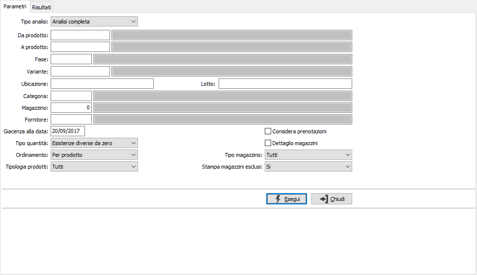
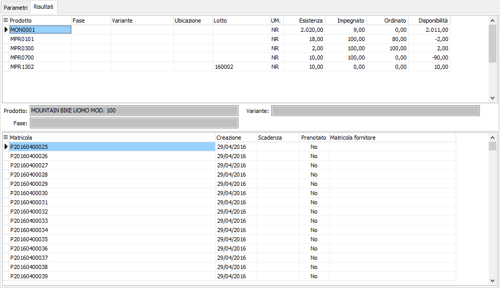

Analisi giacenze matricole
La procedura consente di effettuare l’analisi delle giacenze di magazzino mostrando per prodotto e relativo dettaglio se presente, le matricole collegate; è possibile analizzare il solo magazzino fasi oppure tutto il magazzino (inteso come magazzino fasi e magazzino generale). Per ciascun prodotto e relativo dettaglio se presente, viene visualizzata l’esistenza, la quantità impegnata da clienti e/o dalla produzione, la quantità ordinata a fornitori e/o alla produzione e la conseguente disponibilità.
Se presente il modulo Liste di prelievo sarà possibile effettuare l'analisi delle giacenze considerando o meno le quantità prenotate.
È possibile analizzare le giacenze del solo magazzino fasi oppure le giacenze complete dei dati del magazzino base.

TIPO ANALISI: definisce la tipologia di analisi: analisi completa, magazzino fasi e magazzino base, oppure analisi del solo magazzino fasi.
DA PRODOTTO: eventuale codice dell'articolo, presente in anagrafica Prodotti, da cui si desidera iniziare la selezione dei movimenti di magazzino. Confermando a vuoto, la selezione inizia con il primo prodotto valido. Sul campo è attiva la ricerca (F9) sull’anagrafica prodotti.
A PRODOTTO: eventuale codice dell'articolo, presente in anagrafica Prodotti, a cui si desidera terminare la selezione dei movimenti di magazzino. Confermando a vuoto, la selezione termina con l’ultimo valido. Sul campo è attiva la ricerca (F9) sull’anagrafica prodotti.
FASE: eventuale codice della fase di lavorazione, per cui si desidera effettuare la selezione di analisi. Confermando a vuoto, la selezione considera tutte le fasi di lavorazione. Sul campo sono attive le funzioni di ricerca (F9).
VARIANTE: eventuale codice della variante, per cui si desidera effettuare la selezione di analisi. Confermando a vuoto, la selezione considera tutte le varianti. Sul campo sono attive le funzioni di ricerca (F9).
UBICAZIONE: eventuale codice dell'ubicazione, per cui si desidera effettuare la selezione di analisi. Confermando a vuoto, la selezione considera tutte le ubicazioni. Sul campo sono attive le funzioni di ricerca (F9).
LOTTO: eventuale codice del lotto, per cui si desidera effettuare la selezione di analisi. Confermando a vuoto, la selezione considera tutti i lotti. Sul campo sono attive le funzioni di ricerca (F9).
CATEGORIA MERCEOLOGICA: eventuale codice della categoria merceologica a cui si vuole restringere la selezione di analisi. Sul campo è attiva la ricerca (F9) sulla tabella Categorie merceologiche.
MAGAZZINO: eventuale codice del magazzino a cui si vuole restringere la selezione di analisi. Confermando a vuoto, l’esistenza del prodotto si riferisce a tutti i magazzini. Sul campo è attiva la ricerca (F9) sulla tabella Magazzini.
FORNITORE: eventuale codice del fornitore a cui si vuole restringere la selezione di analisi. Sul campo è attiva la ricerca (F9) sull’anagrafica fornitori.
GIACENZA ALLA DATA: data a cui si desidera effettuare la selezione, viene proposta la data di sistema.
TIPO QUANTITÀ: combo box per filtrare le esistenze negative. Valori ammessi: Tutte le esistenze; Esistenze diverse da 0; Solo esistenze negative.
ORDINAMENTO PER: combo box per definire i criteri di ordinamento. Valori ammessi: Per prodotto; Per Magazzino
TIPO PRODOTTI: combo box per definire la tipologia dei prodotti da elaborare. Valori ammessi: tutti, escluso prodotti fuori inventario, solo prodotti fuori inventario.
CONSIDERA PRENOTAZIONI: definisce se visualizzare la giacenza netta, comprensiva delle prenotazioni (casella con segno di spunta) o quella lorda (casella vuota).
DETTAGLIO MAGAZZINI: check box per definire i criteri di visualizzazione in caso di presenza in più magazzini dello stesso prodotto. Valori ammessi: vuoto = visualizza il totale dei magazzini; spunta = visualizza analiticamente i singoli magazzini.
TIPO MAGAZZINO: combo box per definire la tipologia di magazzino da elaborare. Valori ammessi: tutti, di proprietà, di terzi.
STAMPA MAGAZZINI ESCLUSI: indica se nella selezione si desidera i magazzini normalmente esclusi dalla stampa dell’inventario. Valori ammessi: No, Si, Solo esclusi.
Confermando tramite pressione del bottone Esegui, viene avviata la selezione e richiamata la finestra video Risultati. La finestra video è suddivisa in due griglie: nella griglia superiore vengono riportate le esistenze, gli impegni e le disponibilità relativi alle combinazioni articolo/fase/variante/ubicazione/lotto (in base alle gestioni attive) selezionati in relazione ai criteri espressi; sotto è presente un pannello dove sono mostrate le descrizioni del prodotto/fase/variante (in base alle gestioni attive) attualmente selezionato in griglia. Per ogni rigo nella griglia inferiore vengono riportate le matricole con i relativi dati: stato, stato prenotazione, data creazione, data scadenza.
Utilizzando i tasti funzione della toolbar (anteprima di stampa o stampa), si avviano le relative funzioni.
